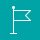
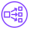

TripPilot AWS 아키텍처
develop(7ce2a53) 기준 · 출시 앱이 쓰는 스택 trippilot-dev · 서울 리전 · 논리 구성도: 파드·DB·캐시의 실제 AZ 배치는 고정하지 않음
사용자 요청
내부 호출
외부 API 호출
배포
로그·알람
GitHub
GitHub Pages약관 · 개인정보 페이지
모바일 앱iOS · Android (Expo)
웹 브라우저Expo Web 번들
외부 API (인터넷)
LLM
Claude · GPT
Claude · GPT
지도 · 경로
Kakao · TMAP · ODsay
Kakao · TMAP · ODsay
공공데이터
기상청 · 특일 · 대기질
기상청 · 특일 · 대기질
푸시 알림
Expo Push
Expo Push
소셜 로그인
Google · Kakao · Naver · Apple
Google · Kakao · Naver · Apple
AWS Cloud
웹 정적 호스팅 · CloudFront 전역 · S3 원본
CloudFront전 세계 엣지 캐시
S3 버킷Expo Web 정적 파일
규모는 설정 파일 하나로
| 지금(dev) | AZ 2개 · NAT 1개 DB 단일 AZ · 캐시 1노드 |
| prd 준비 | AZ 3개 · AZ마다 NAT DB Multi-AZ 캐시 3노드 자동 장애조치 전환은 별도 준비·검증 |

아시아 태평양(서울) ap-northeast-2가용 영역 1
가용 영역 2
퍼블릭 서브넷
퍼블릭 서브넷
인터넷
게이트웨이
게이트웨이

Network LoadBalancerHTTPS 443 · ACM
개발용 NLB는 별도
이 AZ에는 NAT를 두지 않는다 — 비용 절감용 단일 NAT(prd는 AZ마다 1개)
Amazon EKS · Auto Mode k8s 1.35
namespace trippilot · 운영 서버
×2
 gatewaynginx · API·상태 확인만
gatewaynginx · API·상태 확인만
IP당 10r/s (burst 60)
IP당 10r/s (burst 60)
×2
 backendSpring Boot · Kotlin
backendSpring Boot · Kotlin
모듈러 모놀리스
모듈러 모놀리스
×1 · 선택
 embeddingKURE-v1 한국어 임베딩
embeddingKURE-v1 한국어 임베딩
CPU · 메모리 요청 5GiB
CPU · 메모리 요청 5GiB
×2~3 HPA
 aiFastAPI · LLM 게이트웨이
aiFastAPI · LLM 게이트웨이
일정 조립 엔진
일정 조립 엔진
namespace trippilot-dev · 개발 서버
gatewaybackendaiembedding별도 NLB·개발 RDS · 검증 후 0대
클러스터 운영 구성
metrics-server · 자동 확장 지표CloudWatch 에이전트 · 로그 수집Pod Identity · AI→Bedrock 권한NetworkPolicy · 파드 간 허용 목록PDB · 계획된 교체 때 최소 1개
(pgvector) · 암호화 · 백업 14일
RDS (개발 서버용)db.t4g.micro · 운영과 분리된 별도 장비
(연결만 해 두고 아직 미사용)
인터넷·NAT 기본 경로 없음. EKS 노드의 5432·6379만 허용. 인스턴스는 단일 AZ(서브넷 그룹 2 AZ)
리전 관리형 서비스
ECR컨테이너 이미지
(덮어쓰기 금지)
(덮어쓰기 금지)
지표 · 알람
S3Terraform 상태
(버전 관리 · 잠금)
(버전 관리 · 잠금)
부트스트랩
IAM · 전역OIDC 배포 역할
워크로드별 최소 권한
워크로드별 최소 권한
미국 동부(오하이오)
AWS Chatbot알람을 Slack으로
(권한은 읽기 전용으로 묶음)
(권한은 읽기 전용으로 묶음)
미국 리전 (서울 미지원)
알림 문구용 자체 모델
(Qwen3-4B 파인튜닝)
Slack
운영 알람 채널